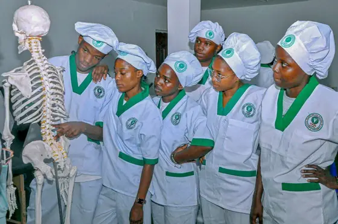
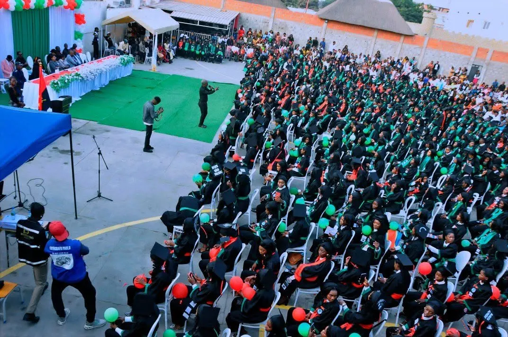

Compromisso com a educação
Formar bem é a primeira responsabilidade de uma escola. No ITPSS, isso significa dar a cada estudante bases sólidas para a profissão que escolheu.

O ITPSS forma técnicos de saúde em Luanda, com a educação e o serviço à comunidade como ponto de partida.
O ITPSS é uma instituição privada de formação técnica na área da saúde, instalada no Município do Hoji Ya Henda, em Luanda.
Aqui formam-se técnicos em Estomatologia, Farmácia e Fisioterapia. As aulas juntam a componente teórica ao trabalho prático, para que cada estudante saia preparado para exercer junto de quem precisa de cuidados de saúde.



Formar bem é a primeira responsabilidade de uma escola. No ITPSS, isso significa dar a cada estudante bases sólidas para a profissão que escolheu.
Os técnicos que aqui estudam vão trabalhar com pessoas. Por isso a formação olha para o cuidado com o doente tanto quanto para a técnica.
O objectivo é claro: preparar profissionais qualificados que contribuam para o desenvolvimento da sociedade angolana.

Formar o Homem para a Vida!
Está preparado para dar o próximo passo na tua formação? Contacta o ITPSS e conhece as oportunidades disponíveis.